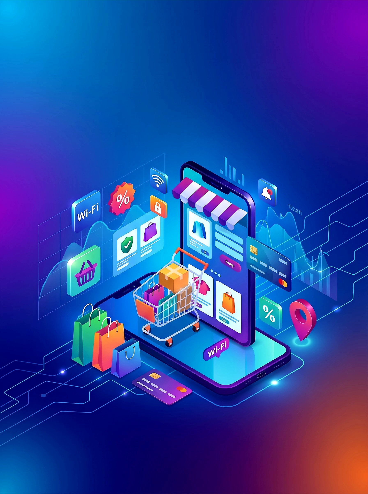

إعداد الطالبة:ندى محمود محمد ابراهيم المسيري
بصراحة كده،لو ركزنا في حياتنا اليومية الفترة دي هنلاقي إن الشراء أونلاين مبقاش مجرد ترند أو حاجة بنعملها للرفاهية. ده بقي أساسي جدا. تخيل إنك محتاج حاجة ضرورية ومفيش وقت تنزل؟ هنا بتيجي فايدة التجارة الإلكترونية .هي مش مجرد مواقع بندحل نشتري منها وخلاص،الموضوع عامل زي ما تكون بتبني محل علي أرض الواقع بالظبط بس على النت.
أول حاجة بتلفت نظرنا كلنا هي شكل الموقع من بره، اللي بنسميها واجهة المنتجات أو الفاترينة.دي بقى الانطباع الأول..ولو مش حلوة، العميل هيقفل الموقع ويمشي.الفكرة كلها إن المنتجات تكون معروضة بشكل مريح للعين،ومتقسمة صح يعني تخيل دخلت تشتري لبس لقيت الجزم مع التيشيرتات كله سايح علي بعضه!أكيد هتقفل وتمشي.لكن لما تلاقي أقسام واضحة،وصور بتفاصيل المنتج، وسعره مكتوب بوضوح، ساعتها بتتشجع تشتري وأنت مرتاح.
طيب العميل اختار اللي هو عايزه؟يجي بقى دور سلة المشتريات. فكرتها ببساطة زي العربية اللي بنجرها في أي سوبر ماركت.بتحط فيها كل اللي عجبك، والميزة هنا إنك ممكن ترجع في كلامك عادي جدا بتشوف الإجمالي كام قبل ما تدفع، ولو حسيت إن التكلفة زادت عن ميزانيتك،بتقدر تشيل حاجة أو اتنين عادي. هي معمولة عشان تديك فرصة تراجع قراراتك وتفكر براحتك قبل خطوة الدفع النهائي.
نيجي بقي لأهم خطوة وهي الفلوس..الدفع نفسه.بوابات الدفع دي عامله زي الكاشير اللي بيحاسبك. بس احنا على النت، لازم الموضوع يكون متأمن جدا دي المنظومة اللي بيانات الفيزا بتاعتك وتتأكد إن فيها رصيد، وبعدين تحول الفلوس لصاحب الموقع من غير ماحد يقدر يسرق البيانات دي. وفي ناس لحد دلوقتي بتخاف وتفضل الدفع عند الاستلام،بس بوابات الدفع الإلكترونية سهلت الدنيا كتير ووفرت مجهود رهيب للطرفين.
| وجه المقارنة | التجارة الألكترونية | المتاجر العادية |
|---|---|---|
| التواجد والعمل | موقع أونلاين شغال 24 ساعة | محل علي الأرض بمواعيد محددة |
| معاينة المنتج | صور وفيديوهات وتفاصيل مكتوبة | فحص المنتج ولمسه باليد مباشرة |
| استلام البضاعة | شحن وتوصيل للمنزل | استلام فوري في نفس اللحظة |
| طرق الدفع | كارت،محفظة إلكترونية، أو عند الاستلام | كاش أو كارت في المحل |
| التكلفة | أقل(بدون إيجار محل أو ديكور) | أعلى(إيجار ومرافق وعمالة) |